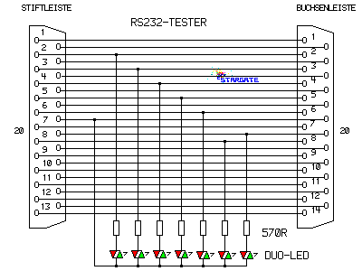

|
|
20.7 RS232 Tester
RS232 Tester für die serielle Schnittstelle
Here you found the circuit diagram of an simple RS232 Circuit
Tester
Hier finden Sie die Schaltung eines einfachen Testers für die
serielle Schnittstelle an allen Atari-Computern. Wenn Sie DB9-Buchsen
an ihrem Atari besitzen verweden Sie einen DB25 zu DB9 Adapter
Die grüne LED zeigt einen LOW-Pegel, die Rote einen
'High-Pegel' an.
 Abbildung 1 - Einfacher RS232 Tester
|
|
|